Spoovel v0 · Bag-Holder / Chute / Wheel-Frame
The Spoovel is a commons engineering path for filling, moving, and eventually binding sacks or bags of loose material for restoration, flood response, erosion control, agroecology, and mutual aid.
It is not a finished machine. It is not a product pitch. The first version should be cheap enough to build, simple enough to break honestly, and repairable enough that a community crew can improve it without permission.
v0 Physical Schematic
The current Spoovel v0 is a bag-holder / chute / wheel-frame: a wheeled rectangular frame with two upright posts, a sloped chute, a bag-mouth holder at the base of the chute, and rear push handles.
A hand winch or crank may be added later, but it is optional in v0. Rope pull works. The winch belongs near the boundary between the base build and Tier 1, not at the center of the first build.

What v0 is trying to prove
- Can loose material enter a sack faster or more cleanly than hand shoveling alone?
- Can the sack stay open without one person sacrificing both hands?
- Can the frame reduce back, shoulder, wrist, or knee strain?
- Can the tool be repaired with ordinary parts and ordinary tools?
- Can failure points be understood before scaling?
Field Test Sheet
The first test is not building the frame. The first test is measuring the hand-filled baseline. Without a baseline, there is no honest way to know whether the Spoovel helped.

Tier Expansion Path
The Spoovel should grow in tiers, not fantasies. Each tier must earn the right to exist through field use.

- Tier 0: bag-holder, chute, wheel-frame, rope pull, repairable frame.
- Tier 1: optional winch, crank, improved chute, or conveyor assist.
- Tier 2: tie-off station, counting marks, replaceable wear surfaces, workflow refinements.
- Tier 3: CodeTape tags, local logging, Signal Finder coordination, emergency logistics.
- Tier 4: optional AI-assisted planning, routing, material estimation, and coordination. This layer must remain dependent on trustworthy field data, not wishful dashboards.
Future Companion Variants
Winch-on-wheels and conveyor-belt versions should become separate companion schematics rather than being folded into this v0 drawing. Each variant needs its own parts list, stress-point map, and field test sheet.
- Winch-on-wheels variant: useful where pulling or lifting is the primary constraint.
- Conveyor-belt variant: useful where material flow and repetitive sack filling are the main constraints.
- Binding-station variant: useful only after filling and handling are stable.
License & Attribution
License status: under review.
Until a formal license is chosen, these materials are shared as commons engineering seeds: copy, adapt, test, repair, and improve them with attribution.
No patents. No enclosure. No proprietary dependency. No extraction of community knowledge without return. Build with care. Test honestly. Share what fails as well as what works.
Attribution
Concept, stewardship, and originating frame: Jacobo Hernández Durbin / The Fox’s Anvil.
Developed with AI-assisted drafting and schematic support from Claude and ChatGPT / Elumannín, with human review, correction, and stewardship by Jacobo Hernández Durbin.
Suggested attribution line:
The Spoovel, from The Fox’s Anvil by Jacobo Hernández Durbin.
Shared as a commons engineering seed; adapt with care and attribution.